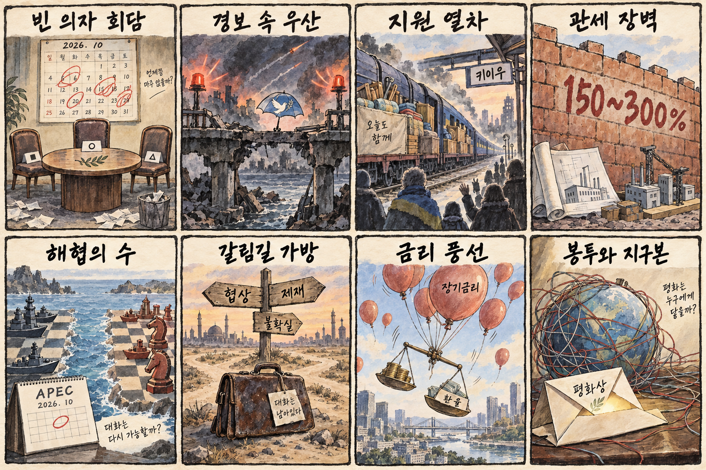
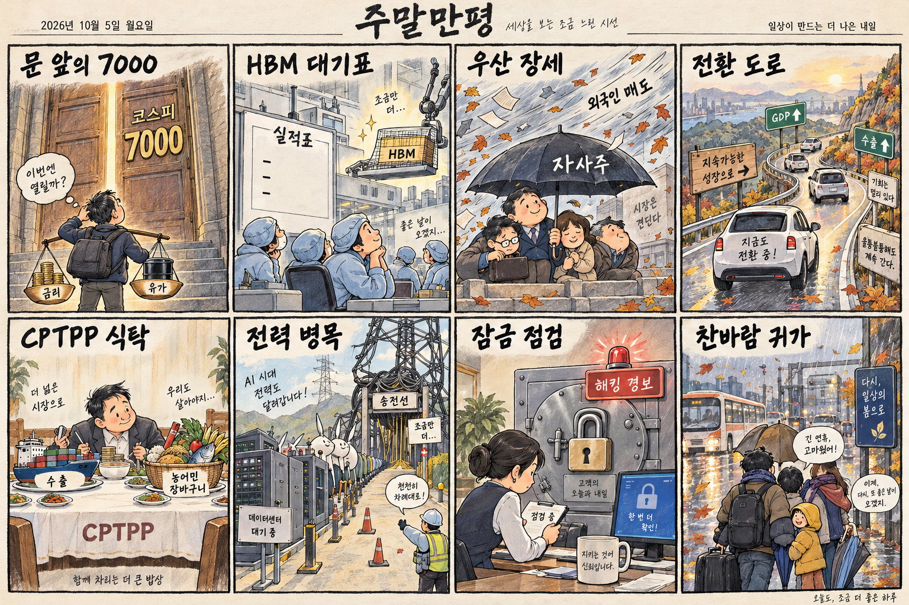

01
프리포트맥모란 · 69.56→72.04달러 · +3.57%
내용요약 시가 대비 +3.57%로 조사 종목 중 상승폭이 컸습니다.
예상여파 원자재 관련 투자심리에 우호적이지만 국내 소재주와의 실적 연결은 기업별로 확인해야 합니다.
MORNING_BRIEFING_20261005
작성 시각: 2026-10-05 06:38 KST · 직전 미국 정규장과 2026-10-05 KST 당일 공개 기사 기준
직전 미국 정규장인 10월 2일 뉴욕증시는 다우 +0.49%, S&P 500 +0.73%, 나스닥 +1.19%로 상승했습니다. 미국 9월 고용 둔화 보도로 금리 인상 기대가 후퇴한 가운데 기술주 위험선호가 회복됐습니다. 한국 증시는 전날 KOSPI가 7,000선을 넘었지만 KOSDAQ은 약보합이어서 지수보다 업종별 차별화에 유의해야 합니다.
| 지수 | 종가 | 등락률 | 한국 증시 시사점 |
|---|---|---|---|
| 다우존스 | 51,176.96 | +0.49% | 고용 둔화와 금리 기대 변화 점검 |
| S&P 500 | 7,722.72 | +0.73% | 고용 둔화와 금리 기대 변화 점검 |
| 나스닥 종합 | 27,190.86 | +1.19% | 기술주 위험선호 회복이 반도체 심리에 우호적 |
직전 미국 정규장은 고용 둔화와 금리 기대 변화로 기술주 위험선호가 회복됐습니다.
최근 거래일인 10월 2일 +0.46%, 시가 대비 +0.94%로 7,000선 위에서 마감했습니다.
우크라이나 3자회담 제안과 150~300% 관세 압박이 외교·통상 변동성을 함께 키우고 있습니다.
연휴 휴장과 검증 표본 부족으로 공식 추천 없이 현금 관망을 유지합니다.
10월 4일 보고서는 공식 추천을 내지 않았습니다. 게시 당시 판단을 유지하며 사후 종목을 추가하지 않습니다.
| 시장 | 종가 | 등락률 | 기준 |
|---|---|---|---|
| KOSPI | 7,003.74 | +0.46% | 10월 2일 정규장 · 시가 대비 +0.94% |
| KOSDAQ | 893.29 | -0.11% | 10월 2일 정규장 · 시가 대비 +0.01% |
| 다우존스 | 51,176.96 | +0.49% | 미국 10월 2일 정규장 |
| S&P 500 | 7,722.72 | +0.73% | 미국 10월 2일 정규장 |
| 나스닥 종합 | 27,190.86 | +1.19% | 미국 10월 2일 정규장 |
나스닥 +1.19%로 3대 지수 중 가장 강했습니다.
프리포트맥모란 +3.57%, 옥시덴털 +2.06%로 원자재 관련주가 강했습니다.
코인베이스 -5.87%, 스트래티지 -3.52%로 변동성이 확대됐습니다.
인텔 -3.90%, 마이크론 -2.94%로 업종 내부 차별화가 나타났습니다.
내용요약 시가 대비 +3.57%로 조사 종목 중 상승폭이 컸습니다.
예상여파 원자재 관련 투자심리에 우호적이지만 국내 소재주와의 실적 연결은 기업별로 확인해야 합니다.
내용요약 시가 대비 +2.92%로 대형 성장주 중 강세를 보였습니다.
예상여파 성장주 위험선호에는 긍정적이나 국내 이차전지 전반의 매수 근거로 단순 확대하면 안 됩니다.
내용요약 시가 대비 +2.47%로 우주산업 종목의 변동성이 두드러졌습니다.
예상여파 국내 우주 관련주는 계약과 실적을 확인해야 하며 테마성 추격은 피해야 합니다.
내용요약 시가 대비 -5.87%로 조사 종목 중 낙폭이 가장 컸습니다.
예상여파 국내 가상자산 연계주의 단기 심리에 부담이며 높은 변동성을 전제로 대응해야 합니다.
내용요약 시가 대비 -5.74%로 정보기술 서비스 종목이 약했습니다.
예상여파 기업 IT 지출과 컨설팅 수요의 둔화 우려가 관련 서비스 기업 가치평가에 영향을 줄 수 있습니다.
최근 거래일 KOSPI는 7,003.74로 전일 종가 대비 +0.46%, 시가 대비 +0.94%였고 KOSDAQ은 전일 종가 대비 -0.11%, 시가 대비 +0.01%였습니다. 직전 미국 정규장의 나스닥 상승은 반도체·성장주 심리에 우호적이지만 마이크론과 인텔은 약세였습니다. 오늘은 연휴로 국내 증시가 휴장하므로 다음 개장 전 삼성전자 실적 기대, 장기금리·유가·환율과 외국인 수급을 다시 확인해야 합니다.
오늘은 추천 없음 — 현금 관망
오늘은 연휴로 한국 증시가 휴장합니다. 당일 시가 진입과 호가 유동성을 확인할 수 없고, 전일까지 수급·컨센서스·공식 촉매·30건 이상의 확률 보정 표본을 모두 갖춰 종합점수 75점·상승확률 60%·예상 손익비 1.5를 검증한 후보도 없습니다.
관심 연결종목 HBM, 전력망, 정보보안 관련주는 다음 개장 뒤 상대강도 관찰 대상일 뿐 매수 추천이 아닙니다. 갭 상승 시 추격매수하지 않습니다.
미국이 제안한 3자 평화회담의 성사 여부와 실제 의제를 봅니다.
150~300% 관세 압박이 한국 기업의 미국 투자와 공급망 비용에 미칠 영향을 점검합니다.
원전 장기계약과 송전 병목을 실제 인허가·발주·공급 시점과 구분합니다.
연휴 마지막 날 빗길·강풍과 오후 기온 하락에 대비합니다.
핵심 요약: AI 경쟁의 병목이 칩에서 원전·송전망·지역 수용성으로 확장되고 있습니다. 칩 담보 금융과 AI 기반 보안은 투자를 앞당길 수 있지만 재무 건전성과 통제체계를 함께 점검해야 합니다.
내용요약 미국 대형 기술기업들이 인공지능 전력 수요를 확보하기 위해 원전의 장기 구매자이자 투자자로 나서고 있다는 당일 보도입니다.
예상여파 원전·전력망·냉각 설비의 장기 수요에는 우호적이지만 계약 기간, 인허가와 실제 전력 공급 시점을 함께 봐야 합니다.
내용요약 인공지능 데이터센터의 전력·용수·지역 부담을 둘러싼 반발이 유럽과 한국으로 확산돼 유럽에서 대규모 투자가 차질을 빚는다는 보도입니다.
예상여파 데이터센터 증설 속도가 지역 수용성과 계통 여건에 좌우되면서 입지·전력 효율 기술의 중요성이 커질 수 있습니다.
내용요약 엔비디아가 인공지능 반도체를 담보 자산처럼 활용하는 금융 전략을 추진하며 메모리 공급사 실적에도 변수가 될 수 있다는 당일 분석입니다.
예상여파 칩 조달 금융은 투자를 앞당길 수 있으나 담보가치와 최종 수요가 약해질 때 재무 위험이 증폭될 수 있습니다.
내용요약 발전량이 있어도 전기를 데이터센터까지 보낼 송전망이 부족해 전력망이 첫 번째 병목으로 떠올랐다는 당일 보도입니다.
예상여파 변압기·케이블·송전 설비 투자에는 기회지만 지역별 계통 접속과 실제 발주 일정을 확인해야 합니다.
내용요약 인공지능 기반 공격에 대응하기 위해 금융권 망분리 규제를 완화하고 인공지능 방어체계를 도입하는 논의가 빨라진다는 보도입니다.
예상여파 보안 자동화 투자가 늘 수 있지만 개인정보·모델 오판·책임소재를 포함한 통제 장치가 함께 마련돼야 합니다.
핵심 요약: 미국이 제안한 우크라이나 3자 평화회담과 독일의 키이우 지원이 전쟁의 외교 국면을 시험합니다. 고율 관세 압박, 대만해협과 이란 변수는 통상·반도체·유가의 위험 프리미엄을 높입니다.
내용요약 젤렌스키 우크라이나 대통령이 미국이 10월 중 미국·러시아·우크라이나 3자 평화회담을 제안했다고 밝혔다는 당일 보도입니다.
예상여파 회담 성사 여부와 의제 합의가 휴전 기대를 좌우하며 방산·에너지·유럽 위험자산 변동성에도 영향을 줄 수 있습니다.
내용요약 독일 총리가 러시아 공세가 이어지는 가운데 키이우를 방문해 우크라이나 지원과 유럽 안보 의지를 강조했다는 보도입니다.
예상여파 유럽의 재정·방위 지원이 장기화할 가능성이 커지고 러시아와의 긴장 관리가 핵심 과제로 남습니다.
내용요약 미국 내 공장을 짓지 않는 기업에 150~300% 관세를 거론하는 압박이 다시 부각됐다는 당일 보도입니다.
예상여파 대미 투자 결정을 앞당길 수 있지만 공급망 비용과 동맹국 기업의 정책 불확실성을 높일 수 있습니다.
내용요약 중국 외교수장이 대만 유사시 대응 문제를 거론하며 APEC을 앞둔 외교적 메시지를 냈다는 당일 보도입니다.
예상여파 대만해협 긴장이 반도체·해운 공급망의 위험 프리미엄을 높이고 역내 외교전으로 이어질 수 있습니다.
내용요약 미국 대통령이 이란 문제와 관련해 결정을 내리겠다며 두 가지 경로를 언급했다는 당일 보도입니다.
예상여파 외교와 압박 중 어느 방향을 택하는지에 따라 중동 긴장, 유가와 해상 운송 위험이 달라질 수 있습니다.

핵심 요약: 연휴 뒤 KOSPI 7,000선은 삼성전자 실적, 외국인 수급, 금리와 유가를 함께 소화해야 합니다. 전기차 전환과 K푸드 수출의 성장 기회 뒤에는 전력망·농어민 보호라는 구조적 과제가 남아 있습니다.
내용요약 연휴 뒤 국내 증시는 삼성전자 실적 기대와 금리·유가 변화를 함께 소화하며 KOSPI 7,000선 안착을 시험할 것이라는 당일 전망입니다.
예상여파 실적 확인 전 기대만으로 오른 종목은 변동성이 커질 수 있어 지수보다 이익 전망과 수급의 지속성을 확인해야 합니다.
내용요약 외국인의 대규모 매도 속에서 주요 기업의 자사주 매입이 지수를 방어했다는 당일 보도입니다.
예상여파 수급 버팀목이 지속되는지와 외국인 매도 업종을 구분해 연휴 뒤 시장 체력을 판단할 필요가 있습니다.
내용요약 전기차 전환이 빨라질수록 국내총생산·소비·수출이 증가할 수 있다는 분석을 다룬 당일 보도입니다.
예상여파 배터리·충전 인프라에는 중장기 기회지만 보조금, 전력망과 내수 수요가 실제 효과의 크기를 좌우합니다.
내용요약 K푸드 수출 확대의 이면에서 농식품 무역수지와 CPTPP 참여가 농어민 부담으로 이어질 수 있다는 당일 보도입니다.
예상여파 수출 확대와 취약 품목 보호를 함께 달성할 보완대책과 원산지·관세 영향평가가 중요해집니다.
내용요약 연휴 마지막 날 전국이 흐리고 곳곳에 비가 내린 뒤 강풍과 함께 기온이 크게 내려간다는 당일 예보입니다.
예상여파 귀경길 빗길과 강풍에 주의하고 오후 외출에는 두꺼운 겉옷을 준비하는 편이 좋습니다.
